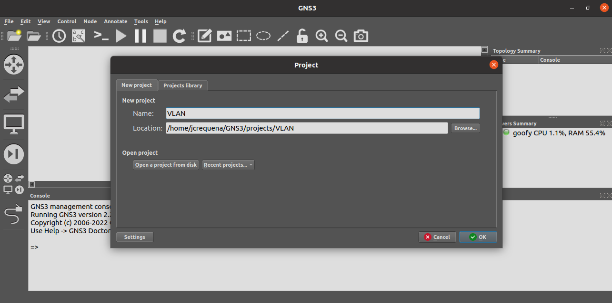
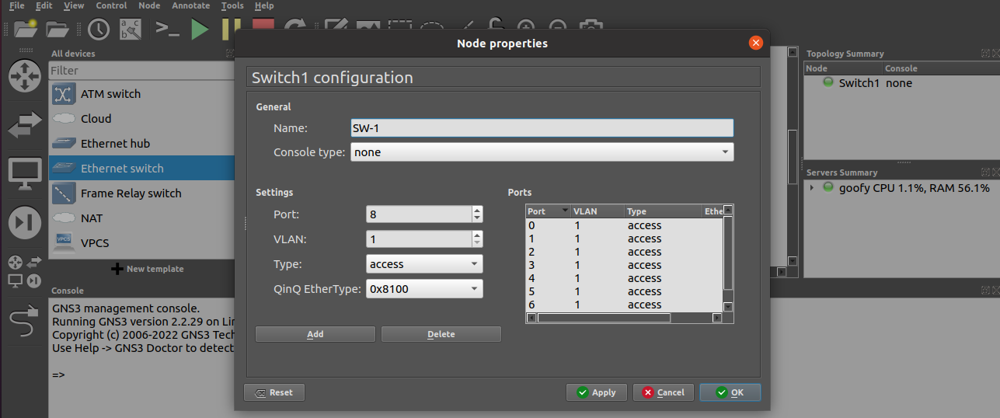

6.1.2 Ejecutar GNS3 y crear nuevo Proyecto
Hay que ejecutar gns3 en la consola para que arranque el sistema gns3 o desde el entorno gráfico:
jcrequena@goofy:~$gns3
En el siguiente vídeo, se describe la configuración inicial básica de GNS3 así como se pueden importar appliances o imágenes en el mismo. También, se describe el procedimiento de configuración inicial de un router Mikrotik con 2 interfaces para permitir la conectividad de 2 equipos con internet.
Vídeo 1. Inicio básico en GNS3.
En este ejemplo práctico, se va a crear un nuevo proyecto al que le llamaremos VLAN y luego, se va a crear un switch (SW-1) y se usará una nueva plantilla (new template), en este caso de un sistema como el que se está utilizando ahora, es decir, Ubuntu Desktop Guest - Docker para poder desplegar en el sistema 2 equipos.
Crear nuevo Nuevo proyecto
Al iniciar gns3, nos ofrece crear un nuevo proyecto al que llamamos VLAN y pulsamos OK.

Añadir switch
Se añade un switch al que llamamos SW-1.

Crear nueva Plantilla
Se crea una nueva plantilla (new template), en este caso de un sistema como el que se está utilizando ahora, es decir, Ubuntu Desktop Guest - Docker.
Agregar el sistema
Una vez aparece el sistema en el panel lateral izquierdo, hay que arrastrarlo al panel central.
Agregar los sistemas
Una vez aparece el sistema en el panel lateral izquierdo, hay que arrastrarlo al panel central y acceder al menú de configuración, donde se renombra a UDClient-1. A continuación, hay que realizar el proceso otra vez para desplegar 2 equipos y conectarlos al switch.
Configurar las interfaces
A continuación se configuran las interfaces (menú edit config) de los equipos donde se asignan las ip's a partir de la 100, es decir UDClient-1 tendrá la 192.168.0.100 y UDClient-2 tendrá la 192.168.0.101.
Encender los equipos
A continuación hay que encender los equipos (menú start). Se puede observar que han subido los consumos al encender los equipos.
Probar conectividad
A continuación, podemos abrir una consola (menú console) del equipo UDClient-1 y hacemos un ping a la ip del UDClient-2. Se puede observar que el equipo contesta por lo que el switch está realizando bien su trabajo. Esto es así, ya que los dos equipos están en la misma VLAN.
Modificar VLAN en el switch
Si ahora cambiamos la VLAN del equipo 2 a la 100 por ejemplo y probamos la conectividad, ya no se tendría conexión, esto es debido a que ahora están en una VLAN diferente. De esta manera, esto nos permite de manera lógica, separar 2 redes que están conectadas físicamente con el mismo rango de red (ip).
En el siguiente vídeo, se describe el funcionamiento básico de gns3 mediante el ejemplo anterior de conexión de 2 equipos a un switch por VLAN:
Vídeo 2. Ejemplo básico en gns3 con VLAN.
Hay que tener en cuenta que para configurar los equipos, las direcciones IP de los mismos deben estar en la misma subred en la cual se encuentre la sub interfaz correspondiente del router. Diferentes VLAN corresponden a diferentes subredes.
Obra publicada con Licencia Creative Commons Reconocimiento No comercial Compartir igual 4.0